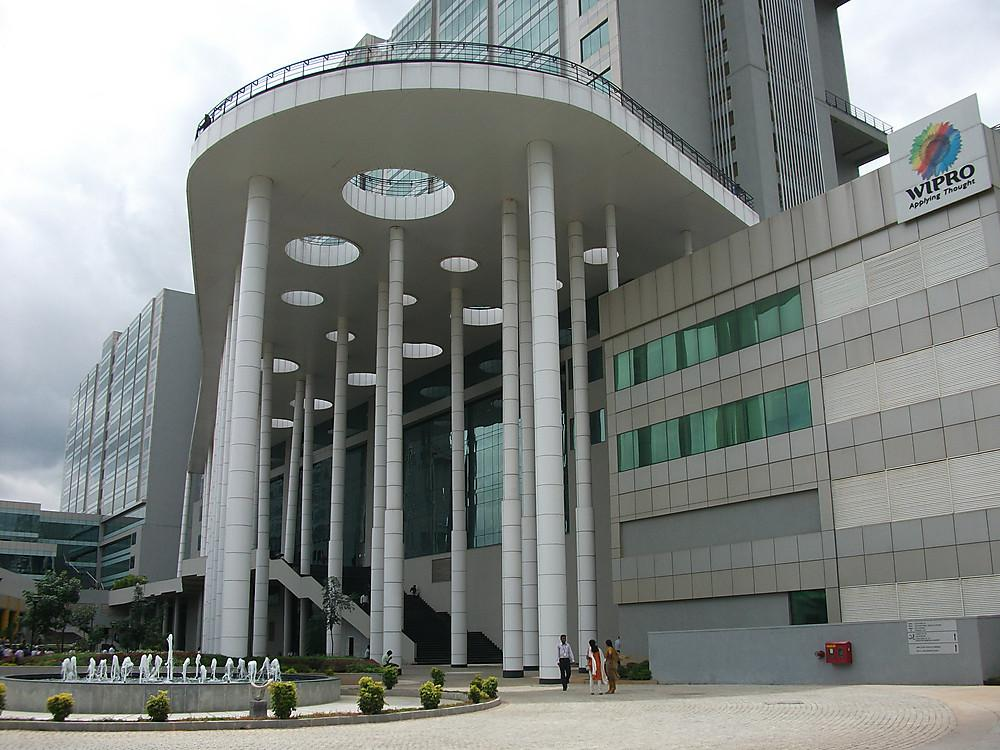
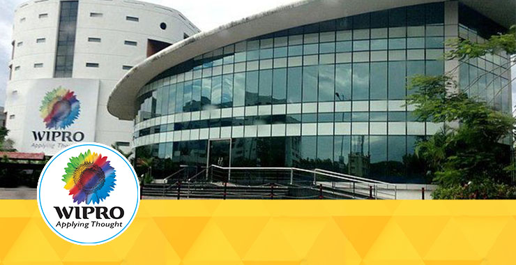

Introduction of wipro company
 Wipro Limited is an Indian multinational corporation that provides information technology, consulting and business process services. It is headquartered in Bangalore, Karnataka India. In 2013, Wipro separated its non-IT businesses and formed the privately owned Wipro Enterprises. The company was incorporated on 29 December 1945 in Amalner, Maharashtra by Mohamed Premji "Western India Palm Refined Oil Limited", later abbreviated to "Wipro". It was initially set up as a manufacturer of vegetable and refined oils in Amalner, Maharashtra, British India, under the trade names of Kisan, Sunflower, and Camel.
History of wipro limited
1986-1992
1986-1992
 In 1988, Wipro added mobile hydraulic cylinders and heavy-duty industrial cylinders to its line of products.A joint venture company with the United States' General Electric in the name of Wipro GE Medical Systems Pvt.Ltd.was set up in 1989 for the manufacture, sales, and service of diagnostic and imaging products. In 1991, tipping systems and Eaton hydraulic products were launched. in 1992, developed the capability to offer standard hydraulic cylinders for construction equipment and truck tipping systems.The "Santoor" talcum powder and "Wipro Baby Soft" were launched in 1990.
1994-2000
In 1995, Wipro set up an overseas design centre, Odyssey 21, for the projects of overseas clients. Wipro Infotech and Wipro Systems were amalgamated with Wipro in April that year. Five of Wipro's manufacturing and development facilities secured the ISO 9001 certification during 1994–95.
2001-2011
In February 2002, Wipro became the first software technology and services company in India to be ISO 14001 certified. Wipro Consumer Care and Lighting Group entered the market of compact fluorescent lamps, with the launch of a range of CFL, under the brand name of Wipro Smartlite. As the company grew, a study revealed that Wipro was the fastest wealth creator for 5 years (1997–2002). It set up a wholly owned subsidiary company to manufacture consumer care and lighting products. In 2004 Wipro joined the billion dollar club.It also partnered with Intel for i-shiksha. In 2006, Wipro acquired cMango Inc., a US-based technology infrastructure consulting firm, and a Europe-based retail provider.In 2007, Wipro signed a deal with Lockheed Martin.
2012-2018
In 2012, Wipro Ltd. demerged its consumer care, lighting, furniture, infrastructure engineering into a separate company to be named 'Wipro Enterprises Ltd'. In 2014, the firm signed a 10-year $1.2 billion contract with ATCO, a Canadian Energy and Utilities corporation based in Calgary, Alberta. This was the largest deal in Wipro's history. In October 2016, Wipro announced that it was buying Appirio, an Indianapolis-based cloud services company for $500 million.In 2017, the company expanded its operations in London.
2019-2020
In 2019, Wipro Consumer Care and the Ang-Hortaleza Corporation In February 2020, Wipro acquired Rational Interaction,a Seattle-based digital customer experience consultancy In July 2020, the firm announced the launch of its 5G edge services solutions suite built with IBM software systems.
CEO of wipro
Thierry Delaporte(CEO)
On 6 July 2020, Thierry Delaporte took over from Abidali
Neemuchwala as the new CEO of Wipro.
Abidali Neemuchwala was appointed as Wipro's CEO after T. K. Kurien stepped
down in early 2016.
Head offices and branches of wipro in india
For the head offices and branches in india refer the following link
Branches: 1) Chennai 2) Hyderabad 3) Mysore 4) Mumbai 5) Pune 6) Delhi 7) Gurgaon
Eligibility criteria of wipro
Graduation criteria
.jpg) Only full time courses will be considered (Part Time/Correspondence courses will not be
considered).
Only full time courses will be considered (Part Time/Correspondence courses will not be
considered).
1. B.E / B.Tech in any discipline
(CSE/ECE/IT/CIVIL/ME/EEE/Automobile/
Aeronautical etc.)
2. Engineering candidates who have passed out are eligible to apply.
Academic criteria
1.A candidate must have more than 60% marks in 10th and 12th (or diploma).
2.A candidate must have a minimum of 60% marks in graduation and Post
Graduation ( if applicable).
3.A candidate should not have any pending backlogs at the time of appearing
for Wipro selection process.
4.The graduation should be a Full-Time course recognized by Central/State
government of India.
5.A candidate must have completed all the exit formalities in the previous
organization before joining Wipro.
Wipro policies
1.If a candidate has attended an interview within the past 6 months from the
date of new application,then he/she is ineligible to apply.
2.If a candidate has been rejected by Wipro in an interview,then the
candidate is ineligible to apply again for a period
of 6 months after the interview.
3.If for some reason Wipro has terminated the candidate's application,then
the candidate is ineligible to apply.
4.If for any reason a candidate after applying in Wipro,misses the
opportunity to give the interview then the
candidate holds the right to apply again and can attend the selection process.
Document required
1.All original mark sheets related to SSC (10th), Intermediate(12th) and
Graduation are required to be produced
at the time of interview.Also, please carry a copy of a set of all documents at the time
of interview.
2.A copy of candidate's updated resume.
3.Passport size photographs.
4.An original identification proof issued by the government of India (Aadhar
Card,Pan Card,Voter id,Passport etc.)
Recruitment process
Wipro conducts 3 rounds to recruit new employees.
1.Online Test
2.Technical Round
3.HR Round
Online Test
The Online test consist of questions from various domains and an essay writing.
This is a time based test and each section is allocated specific time.
Different sections of the test are :
1.Quantitative Aptitude
2.Logical Reasoning
3.Verbal Ability
4.Basic Programming and Computer Fundamentals
Technical round
To maximize your chances you should be prepared with Data structures and Algorithms, DBMS, Operating System, Networking,OOPs concepts and a programming language of your choice. Students from branches other than CS should prepare basic concepts of their branch.
HR Round
This is the final round of recruitment process. Hr will check your communication skills, confidence and body language. There will be basic HR questions like Tell me about yourself ?,Why do you want join Wipro?